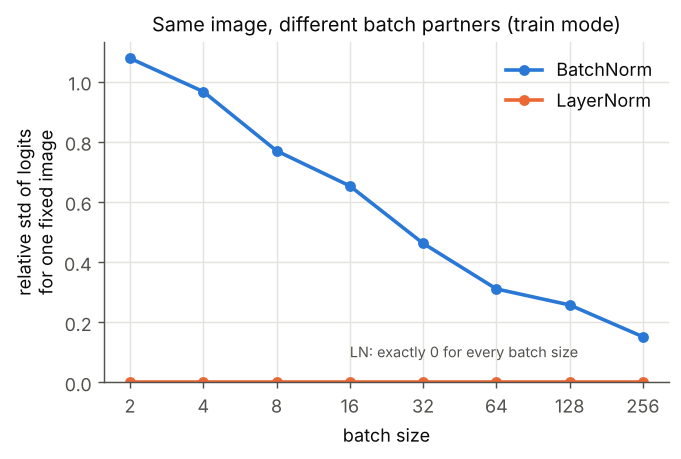

یک تصویر ثابت، همbatchهای متفاوت
BN با batch = 2: تغییر logitها حدود 93%؛ کلاس پیشبینی در 4 اجرا از 10 عوض شد. LN: دقیقاً صفر.

آمار batch در زمان آزمون
BN با batch آزمون 2: دقت از 87.49% به 66.01% میرسد. LN همیشه 81.05%.
آزمایش ۳ · روی مدلهای آموزشدیده

BN با batch = 2: تغییر logitها حدود 93%؛ کلاس پیشبینی در 4 اجرا از 10 عوض شد. LN: دقیقاً صفر.
BN با batch آزمون 2: دقت از 87.49% به 66.01% میرسد. LN همیشه 81.05%.
MobileNetV4 UIB · CIFAR-10